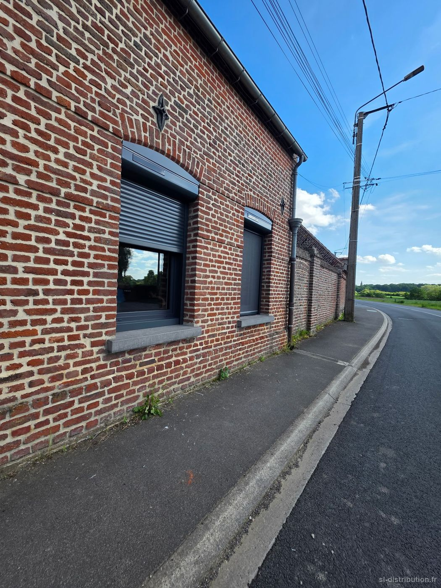
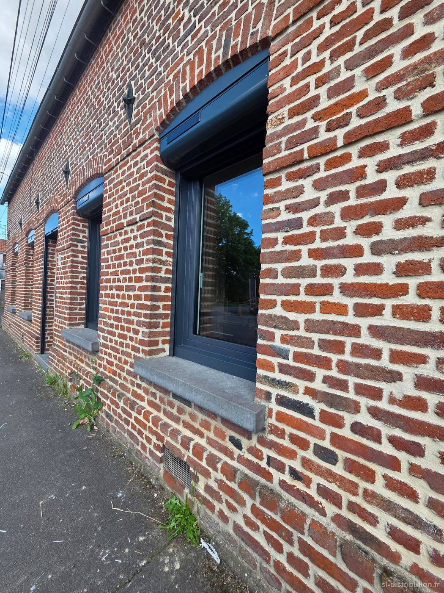
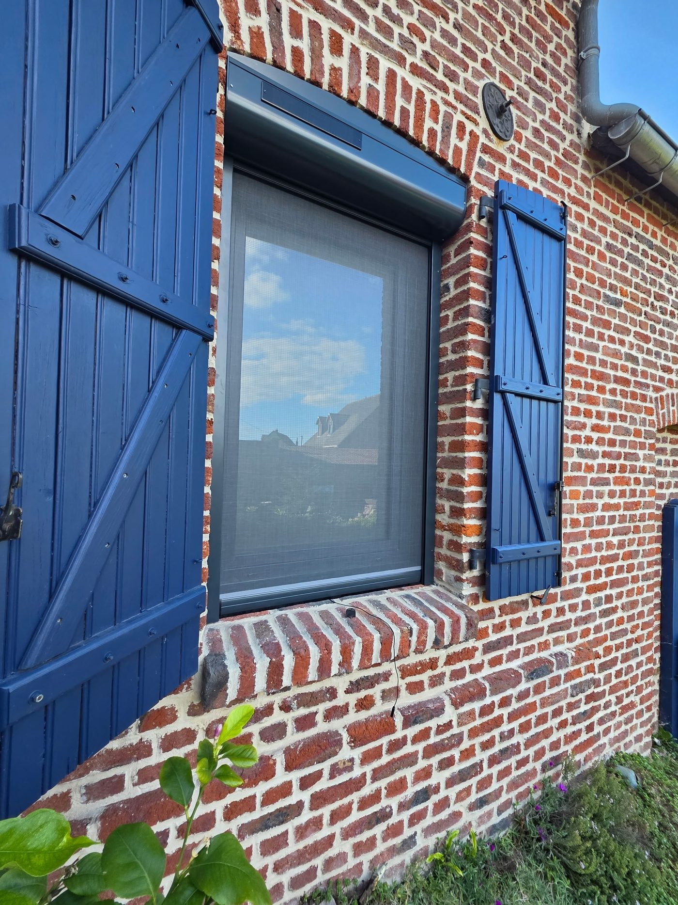
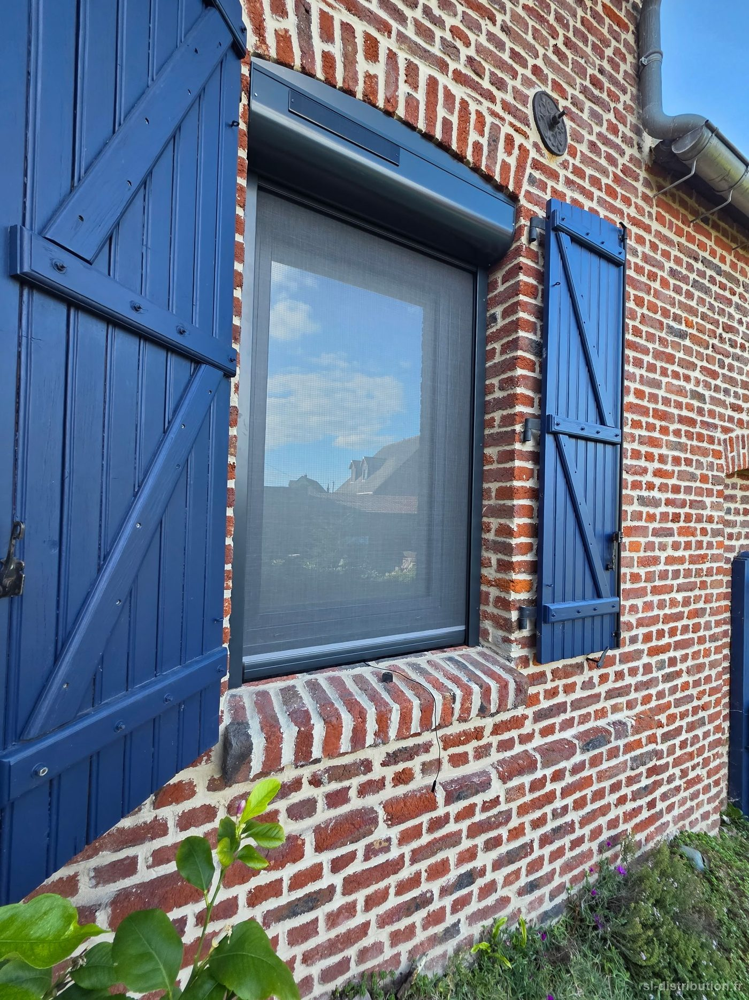
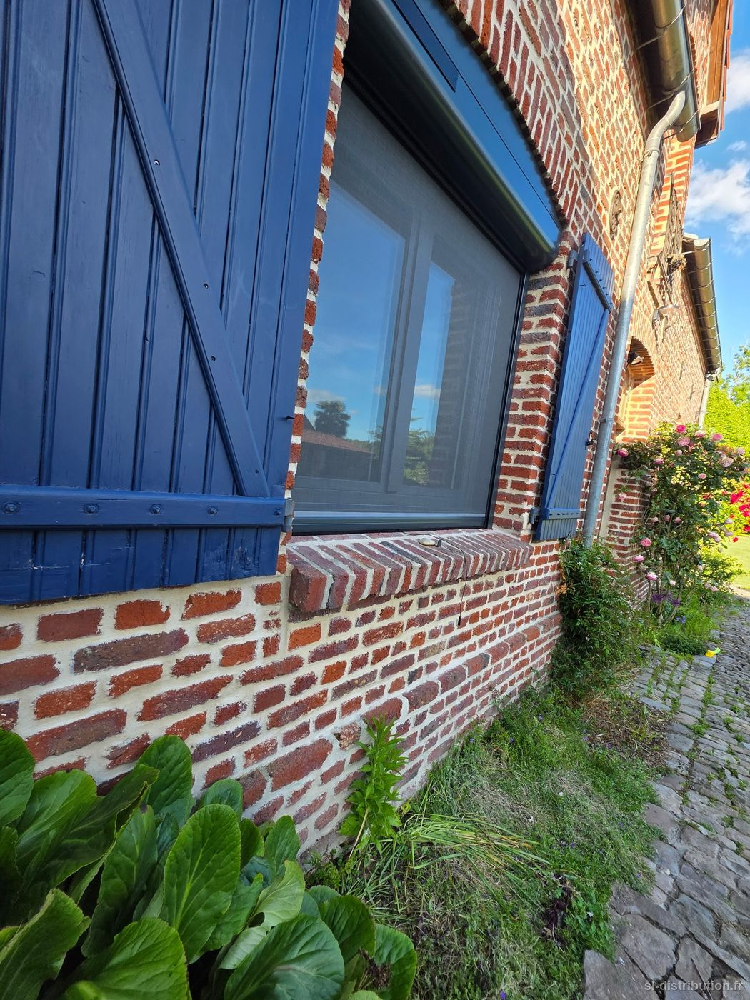
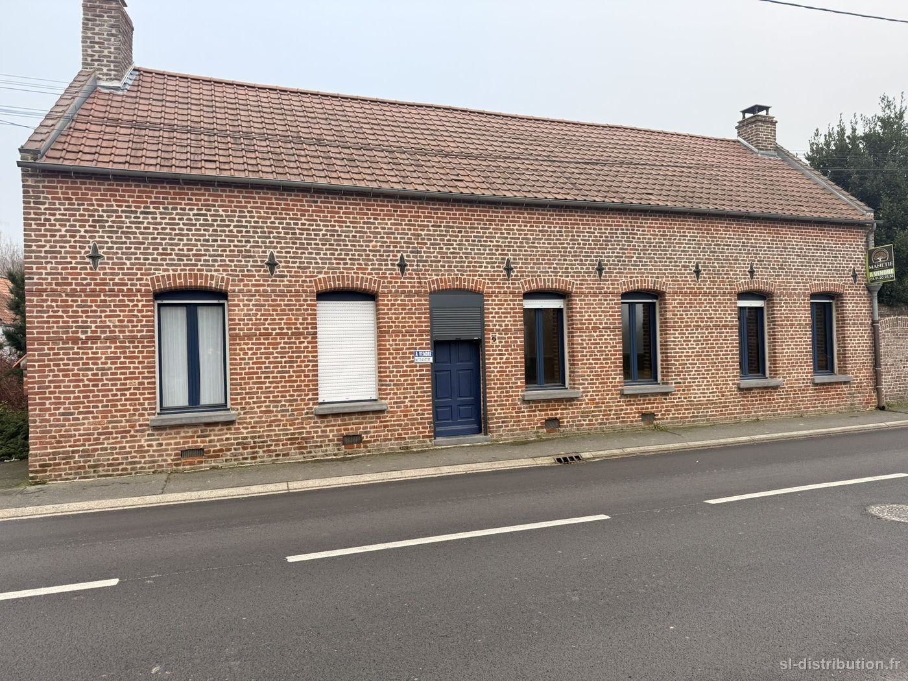

- Commune — Lécluse
- Chantier — Rénovation complète, maison de village
- Année — 2026
Toutes les fenêtres et les portes ont été remplacées, teinte anthracite, dans le respect de la brique et des arcs existants. Du sur-mesure, forcément : dans l'ancien, aucune ouverture n'est identique à sa voisine.
Triple vitrage pour le confort, fini les courants d'air. Et huit volets roulants à motorisation solaire — donc aucun câblage à tirer dans une maison qu'on vient de rénover — pilotés depuis le téléphone.
Le cachet de l'ancien, avec le confort d'aujourd'hui. C'est exactement ce que j'aime faire.








